2015年底，通过一次偶然的机会开始跟进江苏省产业技术研究院这个客户。江苏省产业技术研究院是由江苏省政府与江苏省科技厅直属的，从事海内外产业技术专业的研究机构。致力于对全球范围内的新型产业技术实现商业化与产业技术转移。 2016年初，经过4个月的跟进期，我带领团队成功中标江苏省产业技术研究院品牌设计与IT重构项目。
在为江苏省产业技术研究院服务的过程中，我发现海外服务针对中国本土化企事业单位工作风格、客户需求、沟通方式、工作结果等方面存在着极大的差异性。海外团队如何克服文化、地域、效率的问题，成为了在整个项目中首先需要解决的问题。 因此在为客户提供服务的前期，我自己也是处于适应与摸索的阶段。在确定客户的需求点后，因地制宜的组建南京本地化团队，包括本地项目经理人选、差旅协调、商业谈判支持、国内政府采购流程梳理、工作进度安排等。在2周内，完成了执行团队的组建。
在品牌案例中，图片元素是一个很关键的构成，所有人几乎不可避免的被视觉所主导，就是我们日常口头话表达的“高大上”与“接地气“的区别。因此，针对客户的实际条件，我带领团队尽可能的满足客户需求，以下是我们为客户交付的部分摄影作品。（©️版权所有，未经许可禁止转载）
 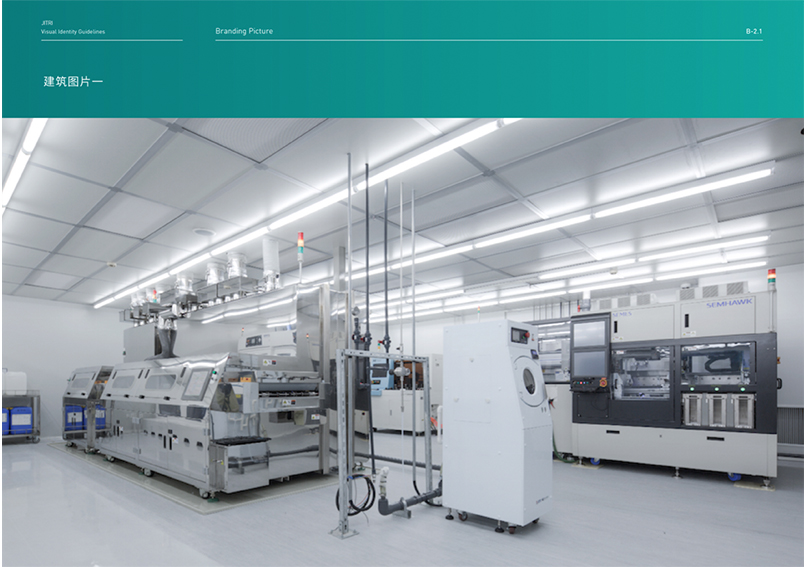
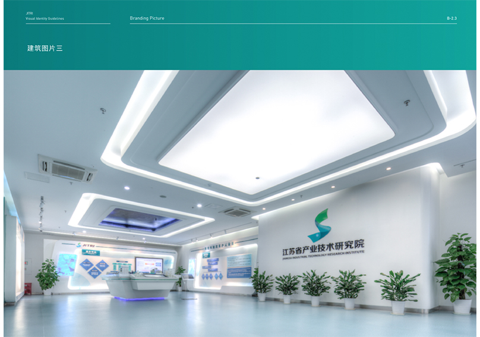
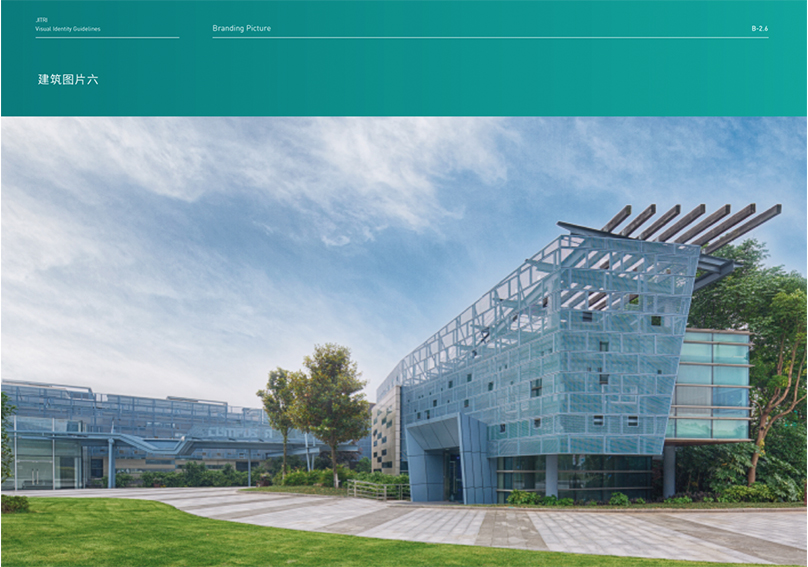
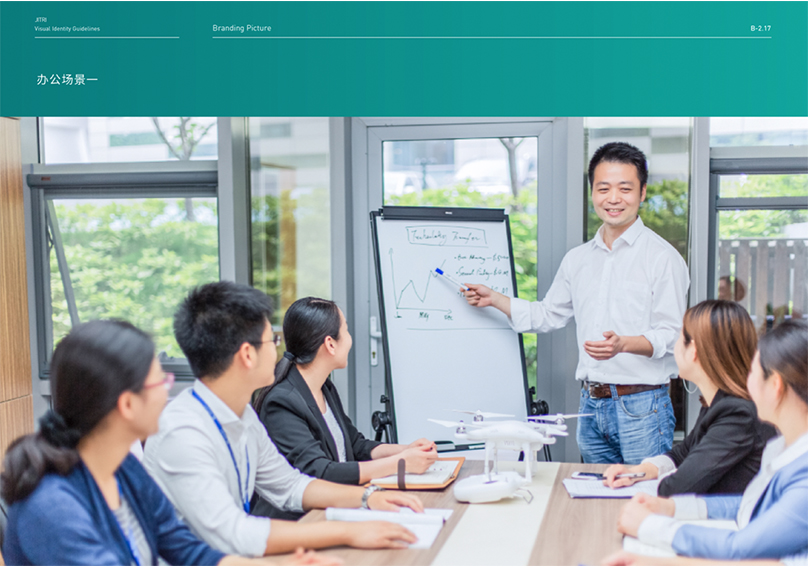
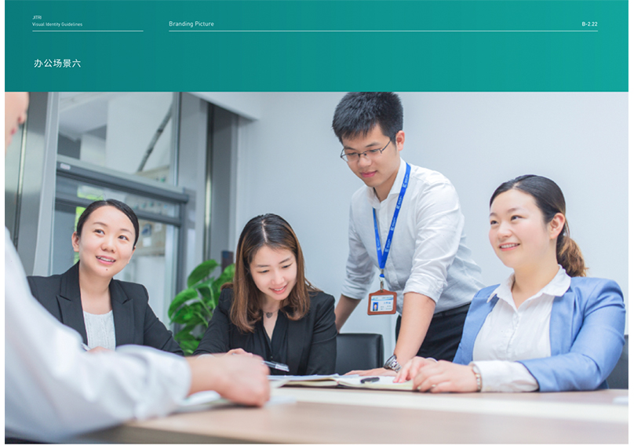
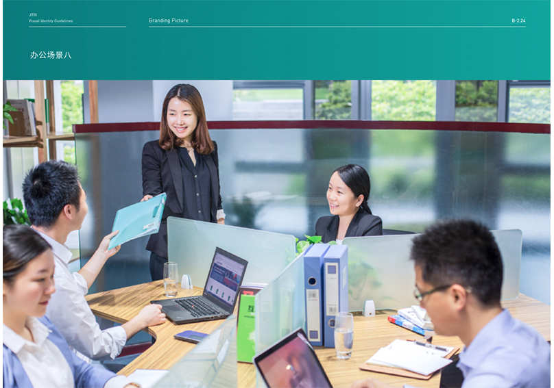
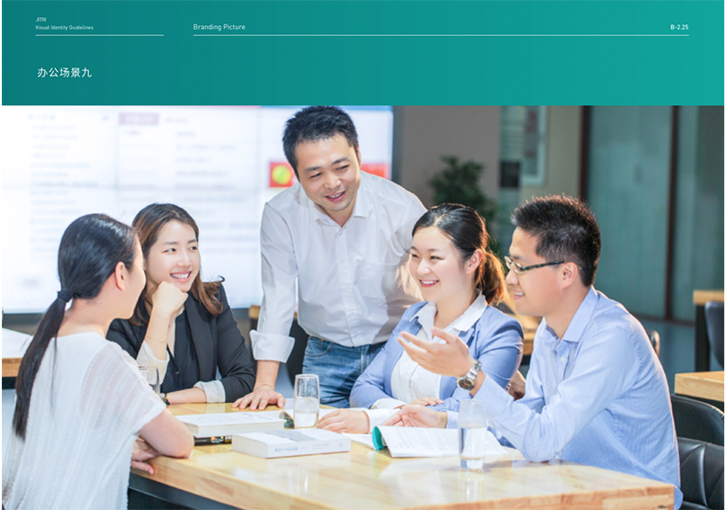
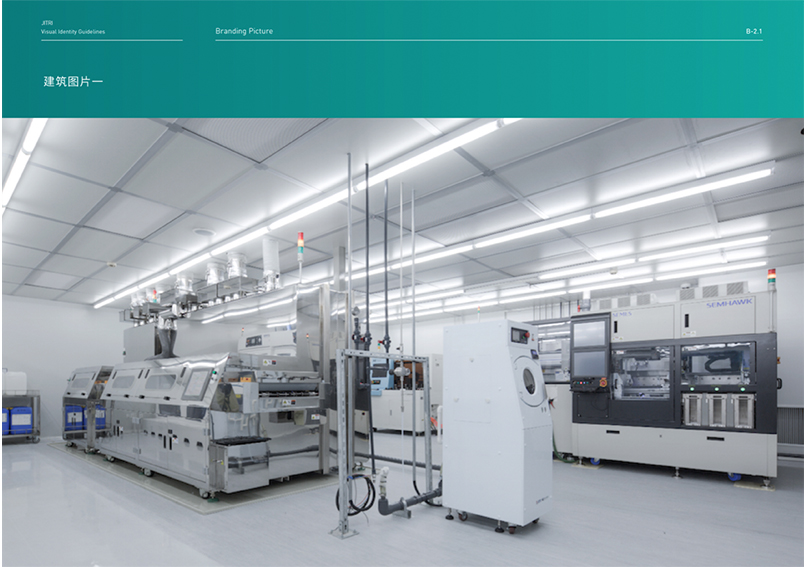
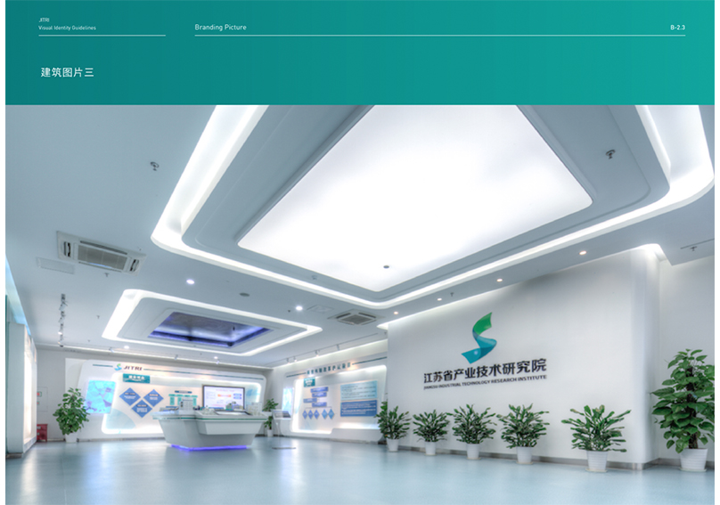
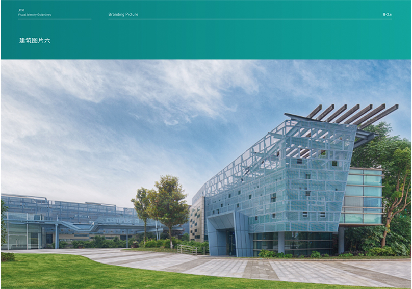
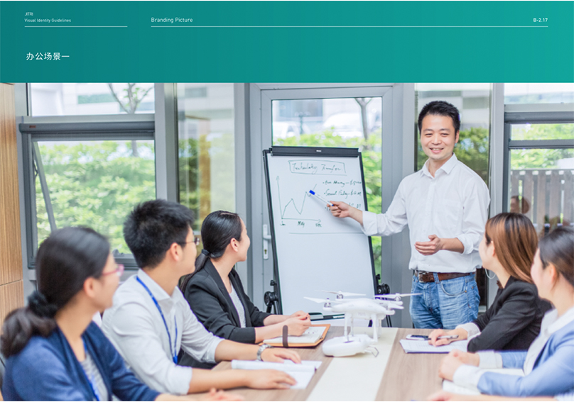
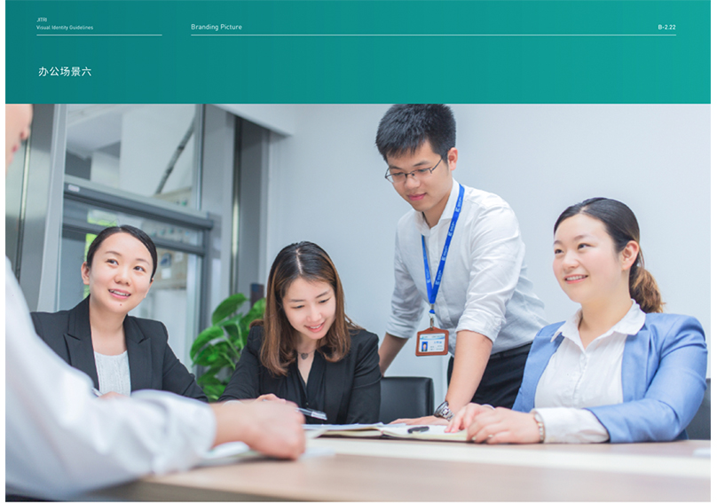
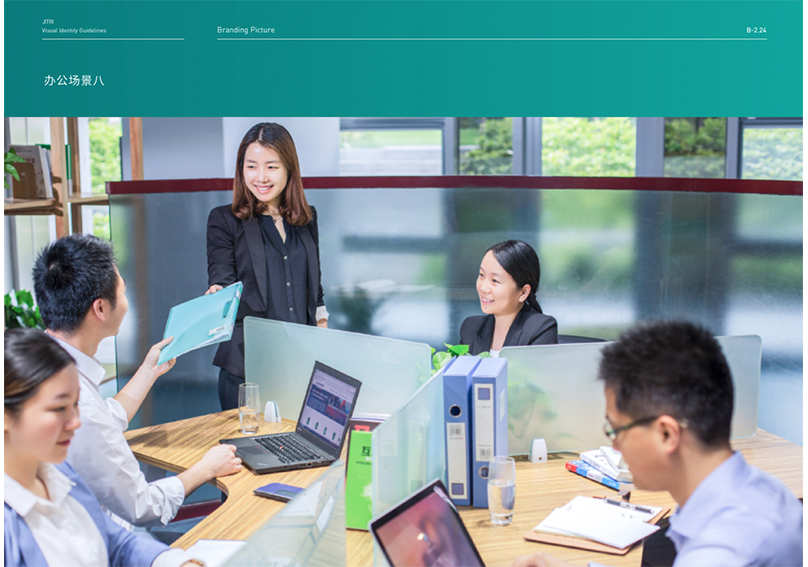
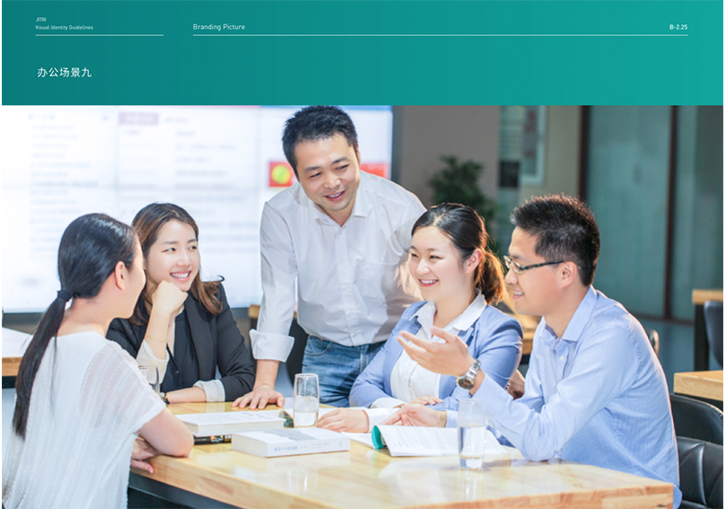
我在为江苏省产业技术研究院的IT服务中主要包括：
这是在国内针对企事业单位的第一个品牌类项目，在这个项目中，意识到对客户而言本土化的必要性。同时，对团队的组建，以及执行人员的管理以保证项目的顺利交付是项目管理的核心。最终，实现整体项目交付率100%，净利润50%以上。